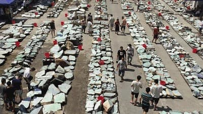

不管是從玉石專櫃還是電商平臺，我們都只能憑自己的感覺去買，完全不知道如何鑒別。有的花了上萬元買的居然是B+C貨（後期人工著色的非天然翡翠）。

隨便一件翡翠在翡翠珠寶專櫃就售價幾千，甚至上萬元，昂貴的租金及人工成本導致其價值與價格完全不成正比。

每個商家都說自己是一手貨源，實際上中國人是不可能掌握一手貨源的。因為沒有開采資格，所以只要是賣翡翠的，即使是自有加工廠也是從緬甸人那買過來的毛料。礦工轉手到緬商，再轉手到中國人手中。而頂級的料子，都被大老板高價收走了。再加上翡翠的特殊性，根本不存在講價，獅子大開口是常事，所以眼力和行業經驗很重要。
說到這裏，您是否覺得這就是一手貨源了？其實這只是開始，毛料到成品，中間可能還會轉手好幾次，而成品出來後，根據雕工、質量，價格能相差幾十倍。再加上成品出來後，行家之間轉手，再到零售，這其中的價格又不知道翻了多少倍。
您也不要覺得自己吃虧了，其實每個行業都存在這種現象，只是由於現在網購普及，中間商賺差價的情況越來越少。而翡翠由於它的特殊性，需要太多的專業知識支撐。我在緬甸摸爬滾打近十年，就是要打破這種局面。未來的發展，任何行業都會往消費者到廠家這條路走。
我也是以翡翠為生的，祖輩都是老實人，我也知道用真誠才能打動人，否側是走不長久的，所以跟大家說實話。我能做的就是從原石到成品，都是自己的工廠加工，再到消費者不存在中間商，讓利給消費者，做長久生意。這就是在商場賣幾萬的翡翠，在我這裏幾千就能買到的原因。只要您有什麽關於翡翠的問題，我都會耐心解答，因為我是本著交朋友的心態，有需要鑒定的，加我微信： （←點擊複製） Line： （←點擊添加） 我也是免費幫忙。好了，廢話不多說。
以上3招可以應付一些低劣的偽造翡翠，但是如果碰到有高超造假技術的翡翠贗品，一般人還是會上當。單靠這幾點小技巧還不夠，不然我們也不可能在市場偷師這麽多年。
篇幅有限，您可以加一下我微信 （←點擊複製） Line： （←點擊添加） ，把想要鑒定的翡翠在自然光下拍一張圖發給我，我可以免費幫您鑒定。
1.看種、水、色
目前市場上95%以上的翡翠產自緬甸，而翡翠也有好有壞，關於挑選翡翠主要看種、水、色、等，翡翠根據種水基本分為玻璃種、高冰種、冰種、糯冰種以及糯種。
2.看翡翠原石產地
緬甸不同的場口所產的翡翠原石也完全不同，以下為緬甸具代表型的八大廠場口。
3.直播選料、切料
所有翡翠原石均采用直播的形式供大家選擇，每塊原石都不同，根據喜好選擇。同時我們還直播切料保證原石與成品一致，讓您買的更放心。
4.每件必出國檢證書
所有翡翠原石均保證為純天然，每件必出國家檢測證書，有證可尋
說了那麽多關於翡翠的內容，接下來我們再來說一下關於原石的一些好處。

說了這麽多，例如買原石劃算還是買成品劃算？怎麽去挑選翡翠？·····等等，大家可能明白了一些，總之就是大家找靠譜商家多看多關註，喜歡的人無休止的喜歡；不喜歡，它就只是石頭而已。
如果您還想知道您買的料子即貴又沒有切漲，一類的問題，加我微信: （←點擊複製）Line: （←點擊添加） ，我用十幾年的行業經驗來告訴您~
1.一手貨源，沒有中間商賺差價
我們的貨源都是從緬甸商手上直接購買的原料，自己家也有設計、經驗師傅，從而成功做到沒有中間商賺差價。

2.原料到成品，一站式搞定
我們除了銷售原石以外，還可以根據您的意願設計成不同的樣式，專業的大師級雕刻師保證每一塊原石都可以達到最佳的利用，打造更多的精品。

3.直播選料、切料
直播很多翠友網購翡翠是通過圖片、視頻來看。但是一些商家總把顏色調得美美的再發給客戶。我們可不這樣，必須在鏡頭下直播，才能給大家看到真實的樣子，大家才能買的踏實放心。
直接通過視頻挑選，然後快遞到您手中，翡翠便捷。所有翡翠均采用直播的方式供大家選擇，保證與到手一致，讓您買得放心。選料、切料
4.每件原石，有證可尋
我們保證，所有原石都是符合國檢檢測要求，出貨必帶國檢檢測證書，有證可尋。
我們從不做一錘子買賣，只要是購買過我們原石的顧客基本上都是回頭客，全都會復購，只因我們做到了源頭直供，全部都是精心挑選原石，不做欺騙顧客行為，我們也將會做的越來越好，感興趣的翠友可以加我微信 （←點擊複製）Line： (←點擊添加)。
版權:瑞麗市翡翠原石珠寶店
複製微信名成功！
即將自動跳轉到微信，煩請
手動添加顧問微信號
还有5秒关闭